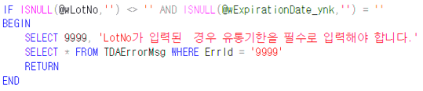

오류 명칭이 다른 값으로 나옴 (영인-바이오젠(YNK사이언스))
거래명세표_ynk

※ 요청사항
수불마감이 되지 않은 상태인데 저장 시 물류 수불 일마감 오류가 발생합니다.
에러 확인 부탁드립니다.
※특이사항
영인 바이오젠은 거래명세표 화면에서 LotNo 데이터가 있으면 "유통기간" 컬럼을 필수적으로입력하도록 되어있습니다.
유통기간을 넣고 저장하면 정상적으로 저장됩니다.
유통기간 에러 코드가 물류 수불 일마감 에러 코드와 중복되어
에러명이 물류 수불 일마감으로 뜨는 것으로 추측됩니다.
TDAErrorMsg 테이블에 ErrId 컬럼 값이 9999인 건이 존재
=> 9999 -> 없는 숫자로 변경